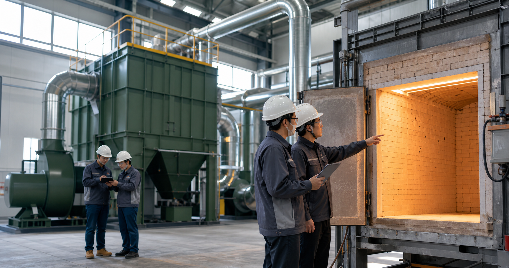

依爐體狀況、使用頻率、熱負載與排氣需求規劃更新或維修方式。

Engineering With Accountability
工程不是只把設備做出來，而是讓它在現場真的能用、好維修、符合使用情境。
可從圖面規劃、設備製作、安裝改善到後續保養一併處理。
以耐用、易保養、降低故障率為原則，提升設備長期運轉效率。
Core Services
核心服務
針對高溫爐體、燃燒系統、環保設備與排氣處理需求，提供可落地的工程解決方案。
耐火材料更新
爐膛內襯、耐火磚、澆注料與保溫層更新，改善熱效率、龜裂、剝落與局部損耗問題。
- 爐體損耗檢查與修復建議
- 耐火材料選配與施工
- 停機期程與復機風險控管
寵物焚化爐維修、設計與製造
依場域規模、使用量與操作需求，規劃寵物焚化設備，並提供既有設備維修與效能改善。
- 爐體結構與燃燒效率改善
- 客製化設備設計與製造
- 維修保養與操作安全建議
環保金爐製造與維修
協助寺廟、社區或相關場域導入更穩定的環保金爐，兼顧燃燒效率、維修便利與排放改善。
- 環保金爐新製與汰換
- 燃燒室、集塵與排氣路徑改善
- 既有設備檢修與升級
空汙設備設計、製造與維修
針對排煙、粉塵、異味與製程尾氣需求，設計或改善空汙處理設備與管路配置。
- 集塵、洗滌、過濾設備規劃
- 風管、排氣系統與機電整合
- 設備維修、保養與效能檢討
Applications
適合委託積燁處理的情況
爐體耐火層破損、掉料、熱效率下降，需要局部或全面更新。
既有焚化設備常停機、溫度不穩、操作維修成本過高。
需要新製寵物焚化爐或環保金爐，但希望依實際場域客製。
排氣、粉塵或異味處理效果不穩，需要檢修或重新規劃。
Workflow
從評估到交付，流程清楚可追蹤
每一案先釐清現場限制，再決定是維修、更新、改善，或重新設計製造。
需求訪談
了解設備類型、使用情境、異常狀況、預算與停機時間限制。
現場檢視
確認爐體、耐火層、燃燒狀態、排氣路徑與維修可行性。
工程規劃
提出材料、設備、施工方式、期程與後續維護建議。
製作施工
依規劃執行製造、安裝、更新或維修，並控管施工品質。
測試保養
完成試運轉、異常檢查與保養建議，協助建立長期維護節奏。
Company Profile
積燁國際有限公司
積燁國際有限公司位於高雄，服務範圍聚焦於高溫設備、焚化設備與環保工程。面對不同場域的使用條件，積燁以工程判斷與現場經驗協助客戶做出合適的維修、更新或製造方案。
我們相信設備維護的價值，不只是修復當下故障，更是讓客戶在下一次使用時更安心、更穩定，也更容易管理營運成本。
- 公司名稱
- 積燁國際有限公司
- 統一編號
- 80388671
- 登記狀態
- 核准設立
- 公司地址
- 高雄市鳳山區忠孝里澄清路129巷43弄1號1樓
- 主要服務
- 耐火材料、焚化爐、環保金爐、空汙設備
Contact
需要維修、更新或新製設備？先從現場條件談起。
歡迎提供設備照片、現場位置、目前異常狀況與希望完成時間。積燁可協助初步判斷維修方向，必要時安排現場評估。
電話
請補上公司正式電話
Email
請補上公司正式信箱
公開登記資料未提供可直接採用的官方聯絡電話與信箱，正式上線前請補上公司確認過的聯絡資訊。